Unsere langjährige Erfahrung in der Maschinenbaubranche umfasst folgende Technologien:
Manuelle und automatische Montage

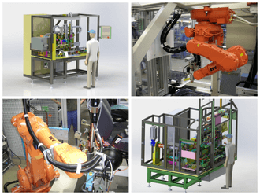
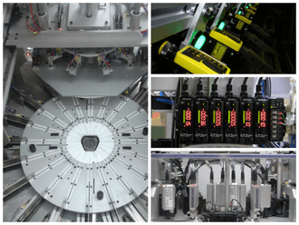
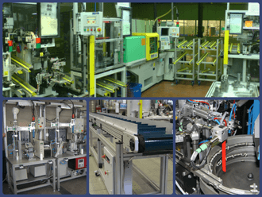
Drehtische/Indexer
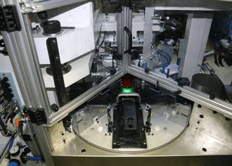
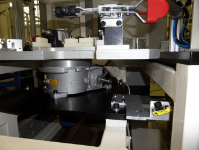
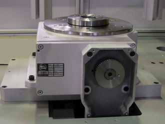
Industrieroboter und „Pick&Place”-Bestückungsautomaten
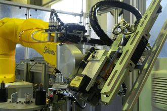
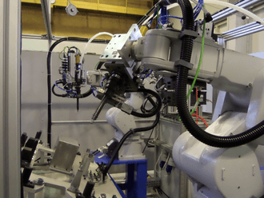
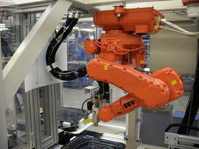
Pressen und Vernietungstechniks
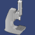
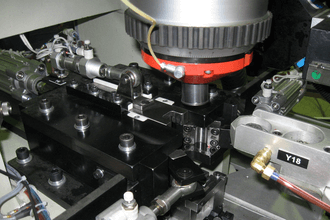
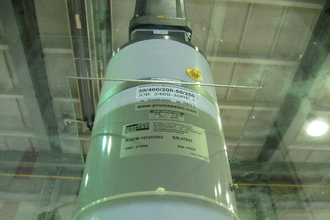
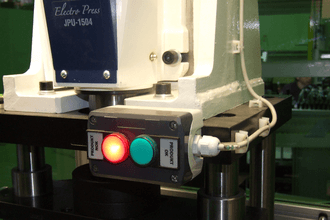
Transport, Förderbänder und „Walking Beam”
Schweißen, Widerstandsschweißen und Ultraschallschweißen
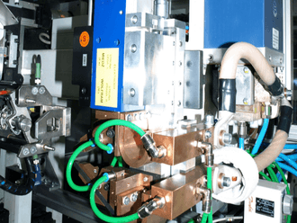
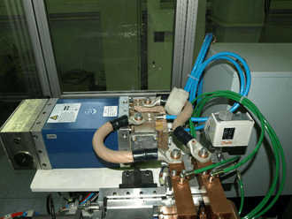
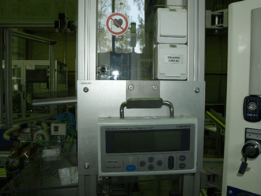
Löten
Perkussion- und Lasermarkierung
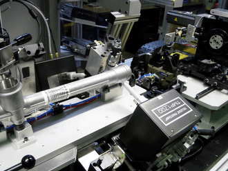
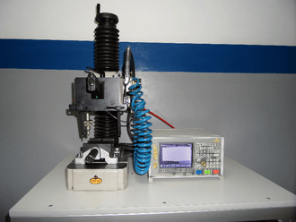
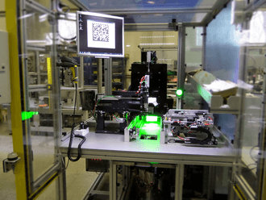
Strichcodes und 2D-Barcodes
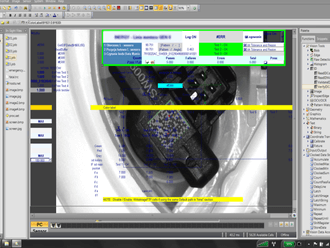
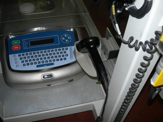
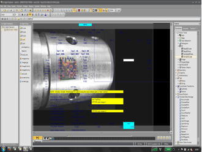
Nähtechnik für Stoffe
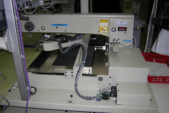
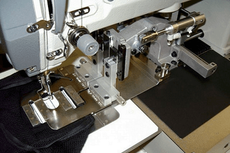
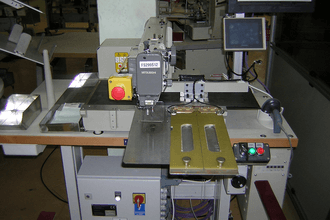
Messungen von mechanischen und elektrischen Größen, Dichteprüfung
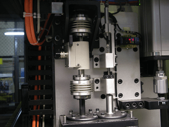
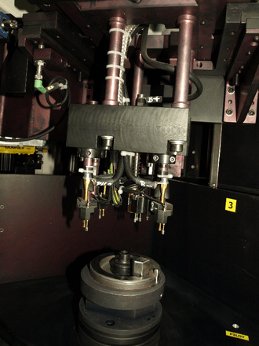

Spritzgussmaschinen, Spritzgusstechnik
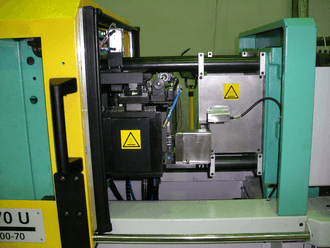
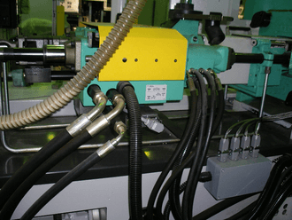